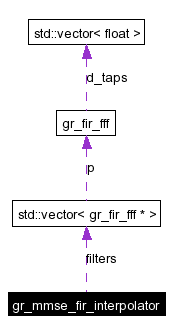

gr_mmse_fir_interpolator Class Reference
#include <gr_mmse_fir_interpolator.h>
Collaboration diagram for gr_mmse_fir_interpolator:

[legend]List of all members.
Detailed Description
Compute intermediate samples between signal samples x(k*Ts).
This implements a Mininum Mean Squared Error interpolator with 8 taps. It is suitable for signals where the bandwidth of interest B = 1/(4*Ts) Where Ts is the time between samples.
Although mu, the fractional delay, is specified as a float, it is actually quantized. 0.0 <= mu <= 1.0. That is, mu is quantized in the interpolate method to 32nd's of a sample.
Constructor & Destructor Documentation
| gr_mmse_fir_interpolator::gr_mmse_fir_interpolator |
( |
|
) |
|
|
Member Function Documentation
| float gr_mmse_fir_interpolator::interpolate |
( |
const float |
input[], |
|
|
float |
mu |
|
) |
|
|
|
|
compute a single interpolated output value. input must have ntaps() valid entries. input[0] .. input[ntaps() - 1] are referenced to compute the output value.
mu must be in the range [0, 1] and specifies the fractional delay.
- Returns:
- the interpolated input value.
|
| unsigned gr_mmse_fir_interpolator::nsteps |
( |
|
) |
const |
|
| unsigned gr_mmse_fir_interpolator::ntaps |
( |
|
) |
const |
|
Member Data Documentation
The documentation for this class was generated from the following files:
Generated on Mon Jul 12 15:02:23 2004 for GNU Radio 2.x by
 1.3.3
1.3.3